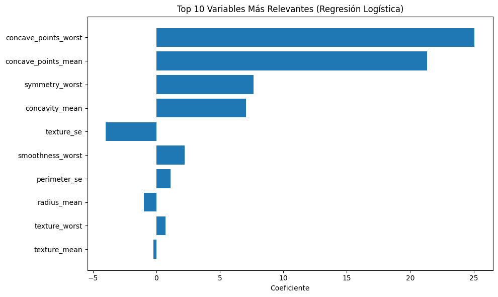

El cáncer de mama es uno de los más comunes en el mundo. Un diagnóstico temprano puede salvar vidas. En este proyecto usamos aprendizaje automático para predecir si un tumor es benigno o maligno basándonos en características extraídas de imágenes médicas.
Trabajamos con el conjunto de datos Breast Cancer Wisconsin disponible en Scikit-learn.
El enfoque está en aplicar regresión logística, ajustar hiperparámetros con GridSearchCV, y visualizar los coeficientes del modelo para entender el impacto de cada variable.
El conjunto de datos está limpio y bien estructurado. Las variables están estandarizadas y la variable objetivo es binaria (0 = benigno, 1 = maligno). Para abordar el desbalance de clases, aplicamos SMOTE (Synthetic Minority Over-sampling Technique).
El análisis exploratorio permitió identificar las variables más relevantes y su distribución entre clases.
Entrenamos un modelo de regresión logística usando GridSearchCV para ajustar hiperparámetros como C, penalty y solver. El modelo logró un rendimiento excelente sobre los datos de prueba:
Se analizaron los coeficientes para entender la importancia de cada variable. Las 10 más influyentes fueron visualizadas en una gráfica de barras horizontal.
Puedes explorar o reproducir este proyecto en GitHub.